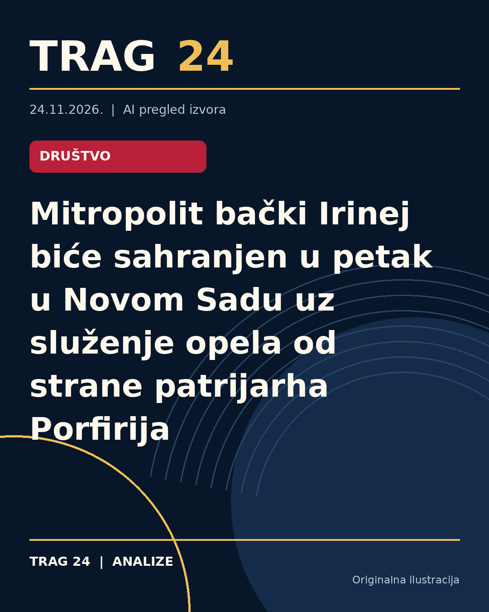

Mitropolit bački Irinej biće sahranjen u petak u Novom Sadu uz služenje opela od strane patrijarha Porfirija

ŠTA SE DOGODILO
Preminuo je arhiepiskop novosadski i mitropolit bački Irinej Bulović. Njegova smrt potvrđena je u otvorenom saopštenju Eparhije bačke Srpske Pravoslavne Crkve. Nakon smrti, najavljeno je održavanje svečane liturgije i opela, kao i sahrana u kripti Sabornog hrama Svetog velikomučenika Georgija u Novom Sadu.
HRONOLOGIJA
Mitropolit Irinej je preminuo u jutarnjim satima na Institutu za onkologiju Vojvodine u Sremskoj Kamenici. Eparhija bačka je objavila da će se sveta zaupokojna Liturgija i čin opela održati u petak, 27. novembra, u 9:00 časova u hramu Sveta Tri Jerarha u Novom Sadu. Nakon opela, telo preminulog mitropolita biće sahranjeno u kripti Sabornog hrama u Novom Sadu. Njegova Svetost Patrijarh srpski Porfirije biće načalnik služenja opela, uz prisustvo drugih arhijereja.
ŠTA NAVODE IZVORI
Svi dostupni izvori - Danas, B92 i Euronews Srbija - potvrđuju istu informaciju o terminu i mestu služenja opela i sahrani, kao i učešću patrijarha Porfirija u obredima. Navodi takođe ističu značaj mitropolita Irineja za Srpsku pravoslavnu crkvu i srpski narod, uz ocenu da je njegov odlazak nenadoknadiv gubitak. Navodi se i da je Irinej Bulović imao dugu i značajnu službu u crkvi i Eparhiji bačkoj.
ŠTA JE POTVRĐENO
Potvrđeno je da je mitropolit bački Irinej preminuo, da će opelo biti služeno u petak 27. novembra u 9 časova u hramu Sveta Tri Jerarha u Novom Sadu, da će ga služiti patrijarh Porfirije i drugi arhijereji, kao i da će biti sahranjen u kripti Sabornog hrama Svetog velikomučenika Georgija u Novom Sadu. Informacije o mestu smrti na Institutu za onkologiju Vojvodine u Sremskoj Kamenici takođe su potvrđene.
ŠTA NIJE POTVRĐENO
Nema informacija u dostavljenim izvorima o okolnostima smrti mitropolita Irineja, niti o bilo kakvim detaljima iz njegovog privatnog života ili zdravstvenom stanju. Takođe, nema podataka o prisustvu konkretnih predstavnika drugih crkava ili zvaničnih državnih delegacija na ceremoniji sahrane.
ŠTA OSTАJE OTVORENO: Ostaje nepoznato koliko će ljudi prisustvovati opelu i sahrani, kao i da li će biti dodatnih ceremonijalnih događaja u vezi sa poslednjim ispraćajem mitropolita Irineja. Nije poznato da li su planirane molitve ili obeležavanja posle sahrane, niti dalji planovi Srpske pravoslavne crkve povodom njegove smrti.
Izvori
- https://www.danas.rs/vesti/drustvo/eparhija-backa-opelo-mitropolitu-irineju-u-petak-u-novom-sadu-sahrana-u-kripti-sabornog-hrama/
- https://www.b92.net/info/drustvo/287799/sahrana-mitropolita-irineja-u-petak-u-novom-sadu/vest
- https://www.euronews.rs/srbija/drustvo/253541/mitropolit-irinej-bice-sahranjen-u-petak-u-novom-sadu/vest
Ova analiza je pripremljena uz pomoć veštačke inteligencije na osnovu javno dostupnih izvora. Navodi izvora nisu nužno nezavisno potvrđeni.